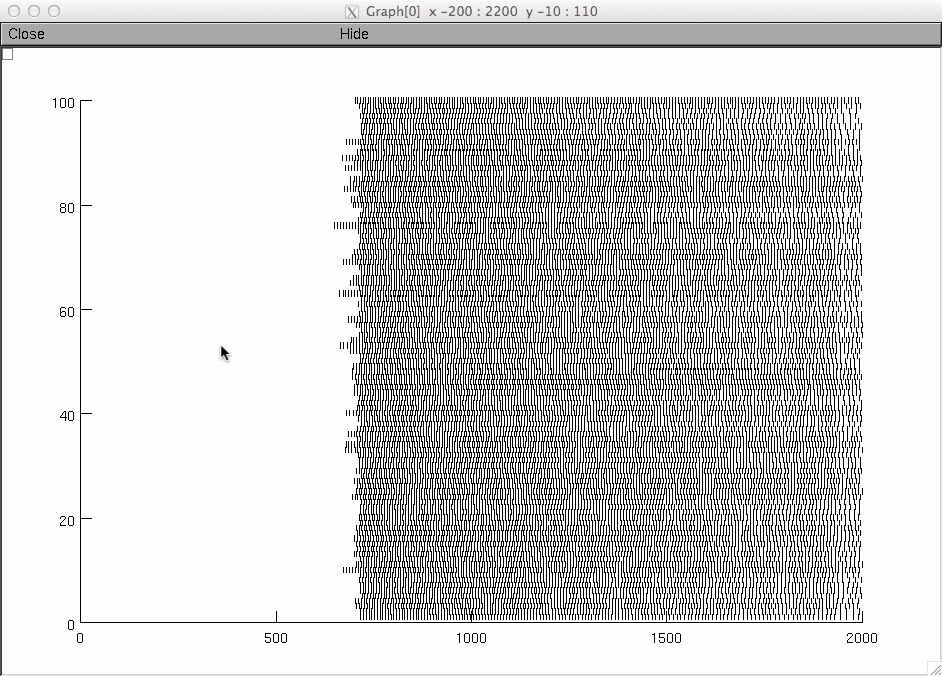

This is the readme for the NEURON model associated with the paper: Fietkiewicz C, Shafer GO, Platt EA, Wilson CG (2016) Variability in respiratory rhythm generation: In vitro and in silico models Communications in Nonlinear Science and Numerical Simulation 32:158-168 This model was contributed by Dr C. Fietkiewicz. To run auto-launch from ModelDB, or download and extract this archive and compile the mod files (see help in modeldb for how). Demonstrates variability in the bursting pattern of the in vitro pre-Bötzinger complex. Creates a raster plot similar to Figure 2C in the paper. USAGE NOTES: Use run.hoc to start simulation. To get more bursts, increase the simulation time. In less than a minute you should see a raster plot like the first burst in Fig. 2C in the paper:  Author contact: chris.fietkiewicz@case.edu Author website: http://filer.case.edu/cxf47